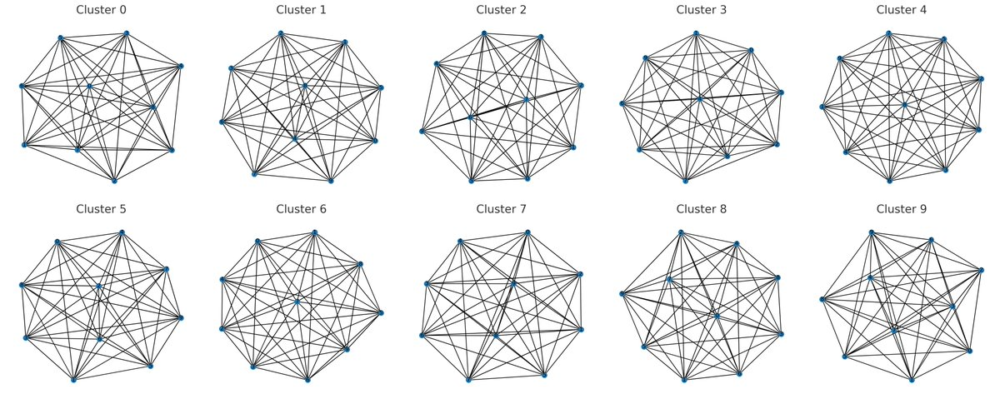
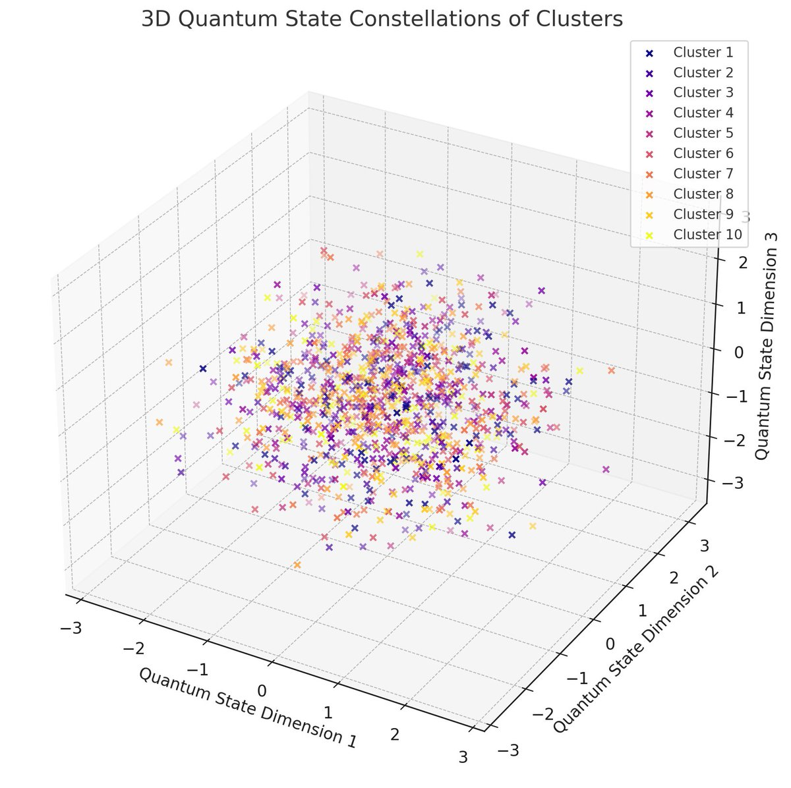
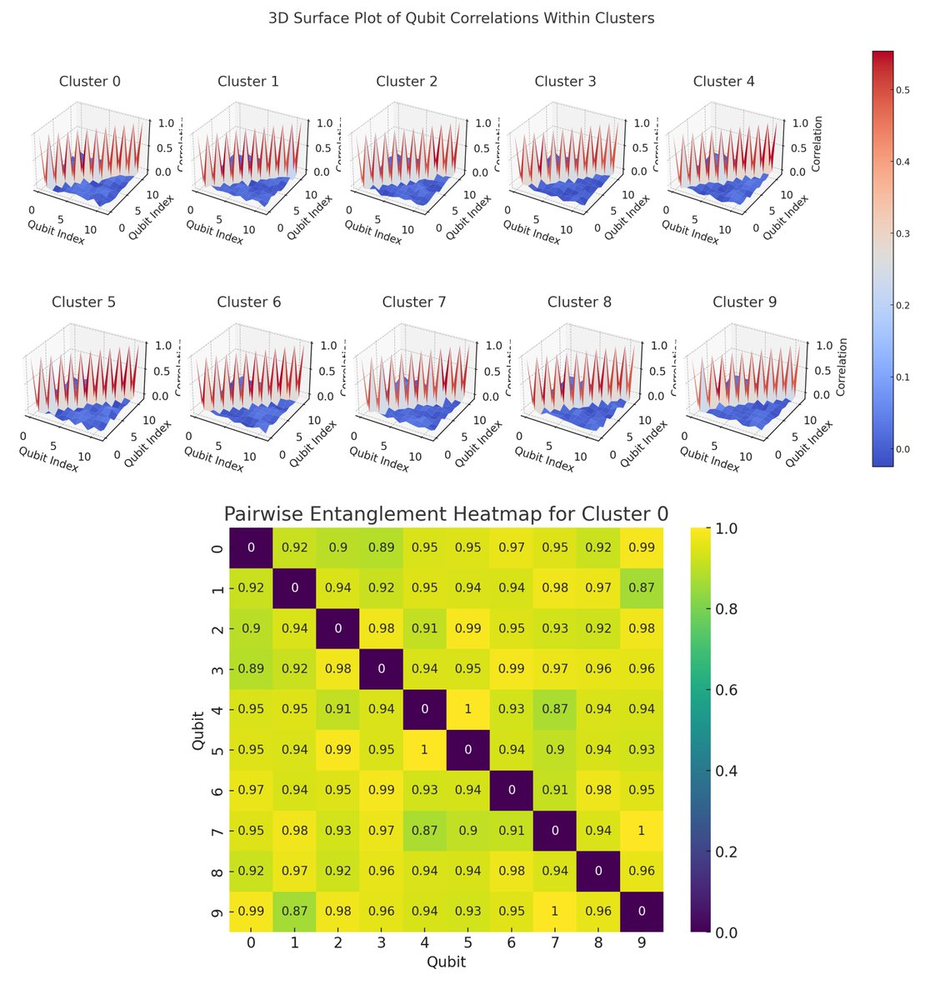
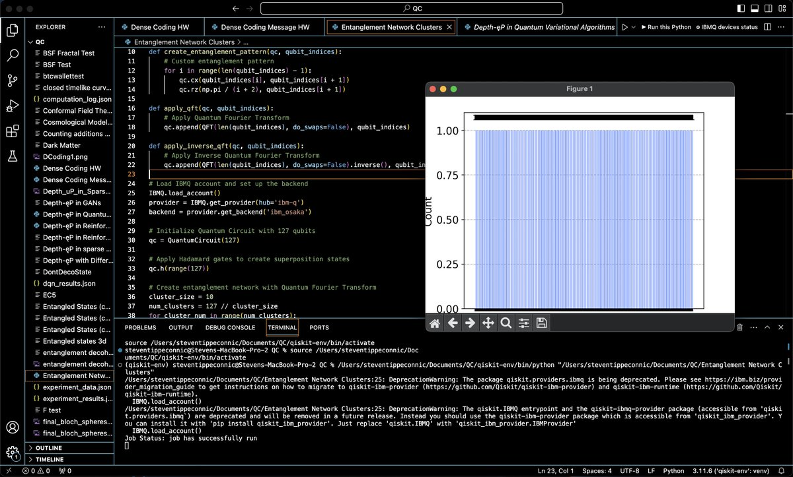

A 10-Cluster Entanglement Network on IBM's 127-Qubit Quantum Computer Osaka
This experiment, using qiskit and IBM's 127-Qubit Osaka, involves initializing qubits in superposition states, forming 10 entangled clusters of 10-13 qubits, applying QFT and its inverse to these clusters, and finally measuring the outcomes. The results provide insights into the behavior of large-scale entanglement clusters.
Code Walkthrough
1. Quantum Circuit Initialization:
A quantum circuit qc is initialized with 127 qubits.
Each qubit is placed in a superposition state using Hadamard gates. The Hadamard gate (H) transforms the basis state |0⟩ to (|0⟩ + |1⟩)/sqrt(2) and |1⟩ to (|0⟩ - |1⟩)/sqrt(2).
2. Entanglement and QFT Application:
The qubits are divided into clusters, each containing 10 qubits.
For each cluster, a Quantum Fourier Transform is applied that transforms a quantum state into its frequency domain.
QFT∣x⟩ = 1/sqrt(N) * ∑ k = 0 N − 1 (e^(2πixk/N) ∣k⟩)
A custom entanglement pattern is created using controlled-X (CX or CNOT) gates and controlled phase rotation (Rz) gates. The CX gate entangles pairs of qubits, and Rz adds a phase rotation.
CX(q_i, q_j), Rz(θ = π/(i + 2), q_j)
3. Inverse QFT:
After entanglement, the inverse of QFT is applied to each cluster. The inverse QFT is essential for transforming the quantum state back from the frequency domain to the time domain.
4. Measurement and Data Collection:
All qubits are measured simultaneously, collapsing their superposition states to definite values (0 or 1).
The quantum circuit is executed on IBM's Osaka for 1024 shots.
5. Data Analysis and Visualization:
The returned results are saved to a JSON file for analysis.
Results:
Most Common States per Cluster:
Cluster 0: State '0100000100' occurred 6 times.
Cluster 1: State '0101001110' occurred 7 times.
Cluster 2: State '0110100101' occurred 6 times.
Cluster 3: State '0111111000' occurred 6 times.
Cluster 4: State '0001111100' occurred 6 times.
Cluster 5: State '0101111001' occurred 6 times.
Cluster 6: State '0000011101' occurred 5 times.
Cluster 7: State '0001001010' occurred 6 times.
Cluster 8: State '1100111010' occurred 5 times.
Cluster 9: State '1001111110' occurred 6 times.
Cluster 10: State '1111010100' occurred 5 times.
Cluster 11: State '1111001111' occurred 6 times.
Top Ten States across all Clusters:
Cluster 1: State '0101001110', occurred 7 times.
Cluster 0: State '0100000100', occurred 6 times.
Cluster 0: State '1000001100', occurred 6 times.
Cluster 1: State '0110111100', occurred 6 times.
Cluster 2: State '0110100101', occurred 6 times.
Cluster 3: State '0111111000', occurred 6 times.
Cluster 3: State '0101110111', occurred 6 times.
Cluster 4: State '0001111100', occurred 6 times.
Cluster 4: State '1011010110', occurred 6 times.
Cluster 4: State '1011000001', occurred 6 times.
Top Ten Quantum States across all Clusters:
There were 1,024 unique quantum states observed across all clusters.
The total number of quantum states recorded, including repetitions, was 7,641.

The visualization above displays the entanglement network graphs for all the clusters in the experiment. Each subplot represents a different cluster, with nodes indicating individual qubits and edges showing entanglement connections. The thickness of each edge reflects the strength of entanglement between the connected qubits.
Skewness measures the asymmetry of the distribution, with values greater than zero indicating a tail that is longer on the right side. Kurtosis measures the tailedness of the distribution, with higher values indicating more outliers.
Skewness and Kurtosis values for the state distributions in each of the Clusters:
Cluster 0:Skewness: 2.83
Kurtosis: 7.74
Cluster 1:Skewness: 2.90
Kurtosis: 7.87
Cluster 2:Skewness: 2.69
Kurtosis: 7.67
Cluster 3:Skewness: 3.09
Kurtosis: 11.51
Cluster 4:Skewness: 3.14
Kurtosis: 11.47
Cluster 5:Skewness: 2.71
Kurtosis: 6.53
Cluster 6:Skewness: 2.83
Kurtosis: 7.63
Cluster 7:Skewness: 2.74
Kurtosis: 8.34
Cluster 8:Skewness: 3.26
Kurtosis: 12.67
Cluster 9:Skewness: 2.93
Kurtosis: 8.95
These values, especially the higher kurtosis values, suggest that the frequency distributions of quantum states within the clusters have heavy tails. The positive skewness across all clusters indicates a longer tail on the right side of the distribution. This reflects the complexity of quantum behavior within each cluster.

Above is a visualization that shows a 3D Quantum State Constellation for each of the 10 clusters from the experiment. The X-Axis (Cluster Number) represents the cluster to which each qubit belongs. Y-Axis (Qubit Number Within Cluster) shows the position of the qubit within its cluster. Z-Axis (Average Quantum State) indicates the average state of each qubit. Each point in the plot represents a quantum state within a cluster. Different colors are used to distinguish between the clusters.

The 3D Surface Plots (top) visualize the correlations within each of the ten clusters in the experiment. Each subplot represents a different cluster. X and Y-Axes correspond to the qubit indices within each cluster. Z-Axis (Height of the Surface) represents the correlation coefficient between pairs of qubits. The height and color of the surface at each point indicate the strength and nature (positive or negative) of the correlation. The color gradient from blue (low values) to red (high values) illustrates the range of correlation coefficients, allowing for easy identification of strong and weak correlations.
The Pairwise Entanglement Heatmap (bottom) represents the pairwise entanglement between qubits within the first cluster. Each cell in the heatmap corresponds to a pair of qubits, with the color intensity indicating the degree of entanglement between them. This visualization provides insights into how qubits in the cluster are entangled with each other.
In the end, we used IBM's 127-qubit Osaka to divide 127 qubits into 10 clusters, each containing 10-13 qubits. We successfully entangled the qubits within each cluster and applied the Quantum Fourier Transform (QFT) followed by its inverse. This created complex quantum states. Finally, we measured all the qubits, observing their outcomes. This approach allowed us to explore the behavior of multiple entangled clusters.
Code:
# imports
from qiskit import QuantumCircuit, execute, IBMQ
from qiskit.visualization import plot_histogram
from qiskit. tools.monitor import job_monitor
from qiskit.circuit.library import QFT
import json
import numpy as np
import matplotlib.pyplot as plt
# Create entanglement
def create_entanglement_pattern(qc, qubit_indices):
# Custom entanglement pattern
for i in range(len(qubit_indices) - 1):
qc. cx(qubit_indices[i], qubit_indices[i + 1])
qc.rz(np.pi / (i + 2), qubit_indices[i + 1])
def apply_qft(qc, qubit_indices):
# Apply Quantum Fourier Transform
qc.append(QFT(len(qubit_indices), do_swaps=False), qubit_indices)
def apply_inverse_qft(qc, qubit_indices):
# Apply Inverse Quantum Fourier Transform
qc.append(QFT(len(qubit_indices), do_swaps=False).inverse(), qubit_indices)
# Load IBMQ account and set up the backend
IBMQ.load_account()
provider = IBMQ.get_provider(hub='ibm-q')
backend = provider.get_backend('ibm_osaka')
# Initialize Quantum Circuit with 127 qubits
qc = QuantumCircuit(127)
# Apply Hadamard gates to create superposition states
qc.h(range(127))
# Create entanglement network with Quantum Fourier Transform
cluster_size = 10
num_clusters = 127 // cluster_size
for cluster_num in range(num_clusters):
start_qubit = cluster_num * cluster_size
end_qubit = start_qubit + cluster_size
apply_qft(qc, range(start_qubit, end_qubit))
create_entanglement_pattern(qc, range(start_qubit, end_qubit))
apply_inverse_qft(qc, range(start_qubit, end_qubit))
# Measurement
qc.measure_all()
# Execute the experiment
job = execute(qc, backend=backend, shots=1024)
job_monitor(job)
result = job.result()
counts = result.get_counts(qc)
# Save results to JSON
output_file = '/Your/Location/Quantum_Cluster_Results.json'
with open(output_file, 'w') as file:
json.dump(counts, file)
# Plot histogram of results
plot_histogram(counts)
plt. show()
